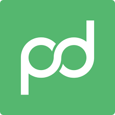

case study · pandadoc
placeholder case study. drop in real numbers, quotes, screenshots, and posts here.

impressions
— × baseline
add real growth figure here
inbound
— deals
sourced directly from posts
time per post
30s
slack approval only
"pull quote from the client goes here."
— name, title, pandadoc